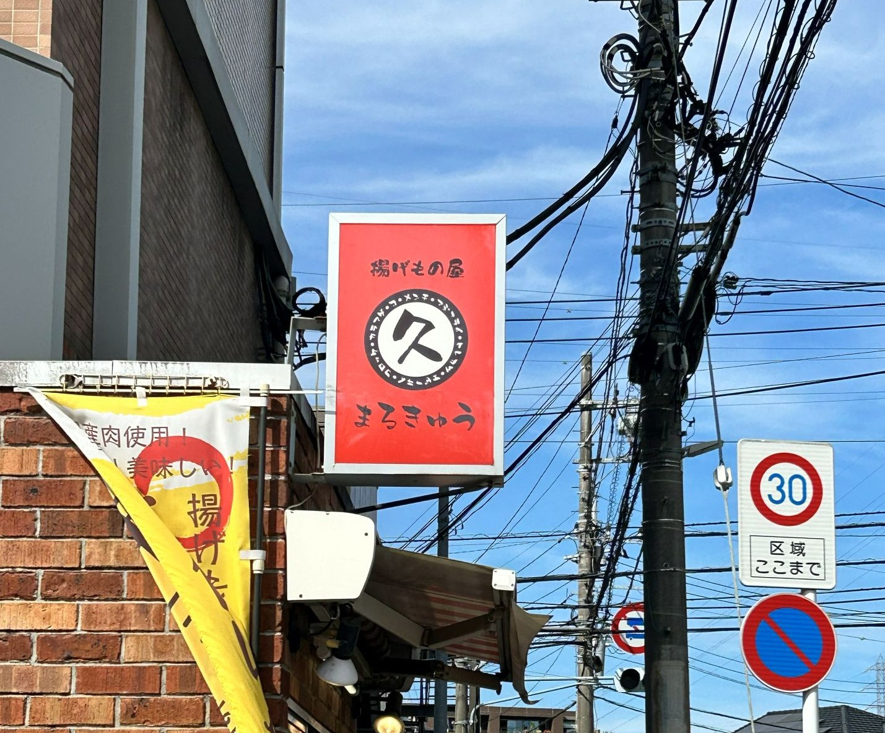
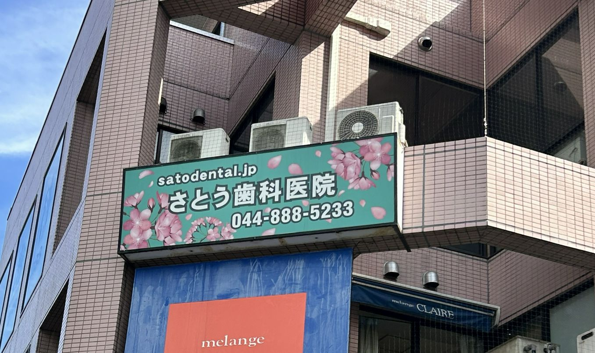
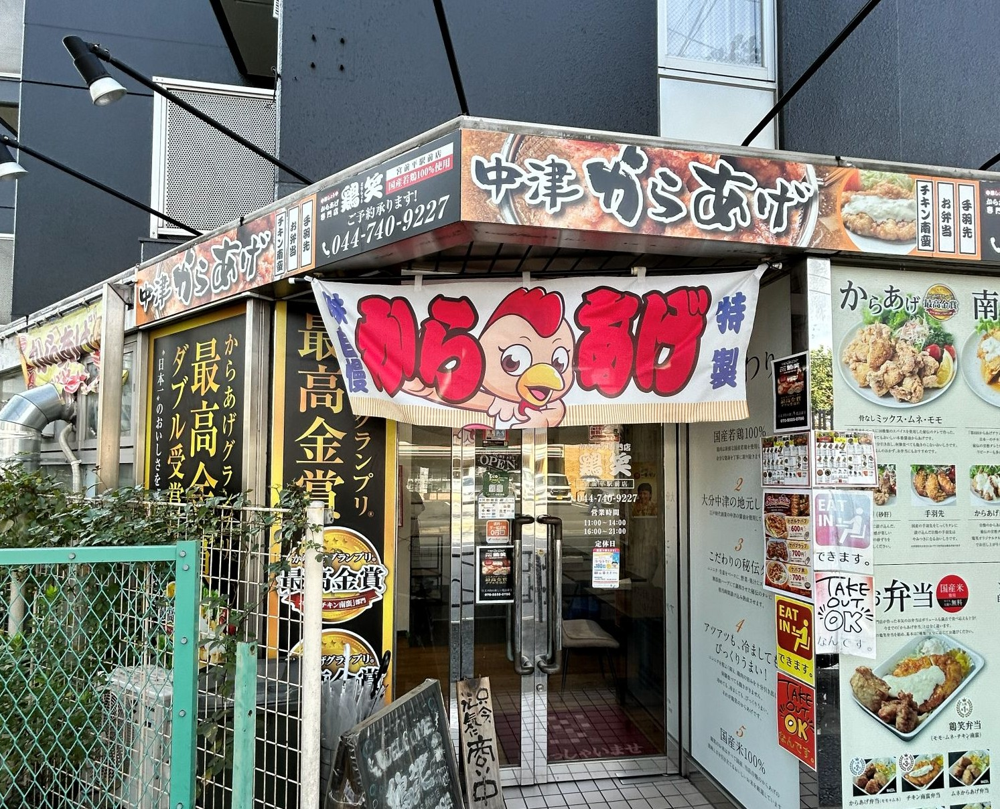

10/17自分で撮影
家の近くの揚げ物屋さんの看板で、一見シンプルな看板だがよく見てみると、
丸の黒い淵のところに「カラアゲ・メンチ・アジフライ・ヒレカツ・エビフライ・コロッケ」と書いてある。

10/17自分で撮影
家の近くの歯科の看板。歯科の看板に桜で最初は関連性がないように見えたけど、
春になると桜がきれいに咲く地域なので、そこに合わせて桜のデザインにしていると考えた。

10/17自分で撮影
家の近くのから揚げ屋さん。このお店は前の二つなどのデザインというより、
とにかくから揚げを全面に出してアピールをしようとしていると感じた。